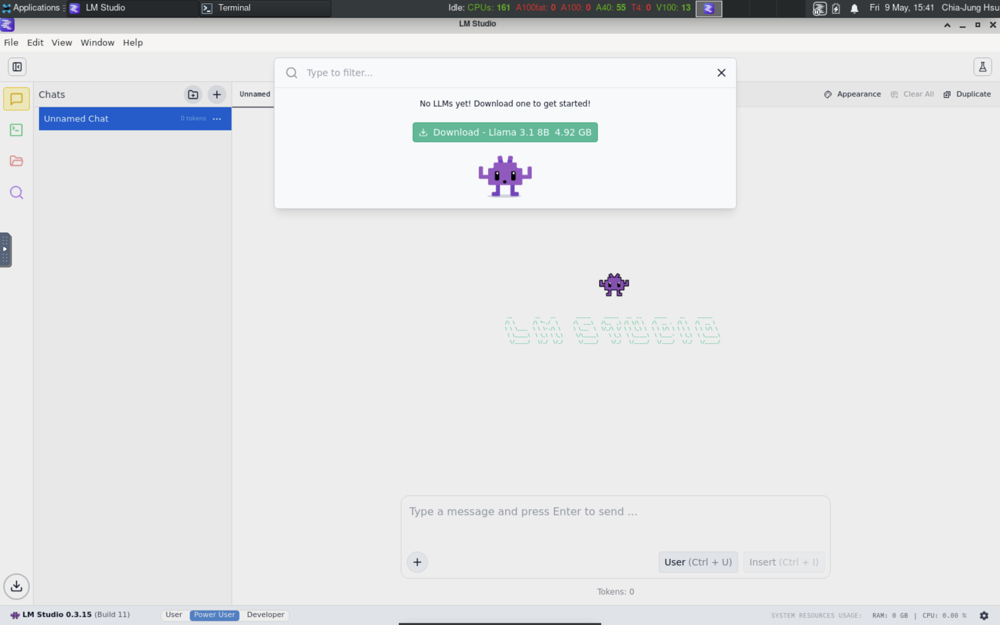
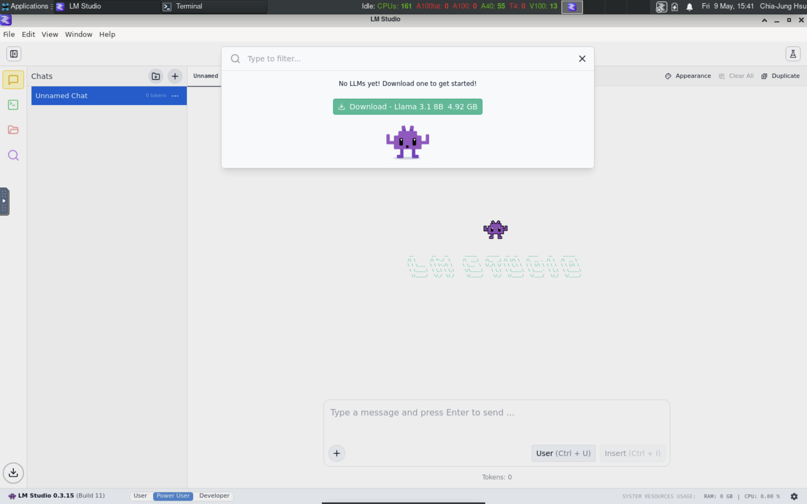
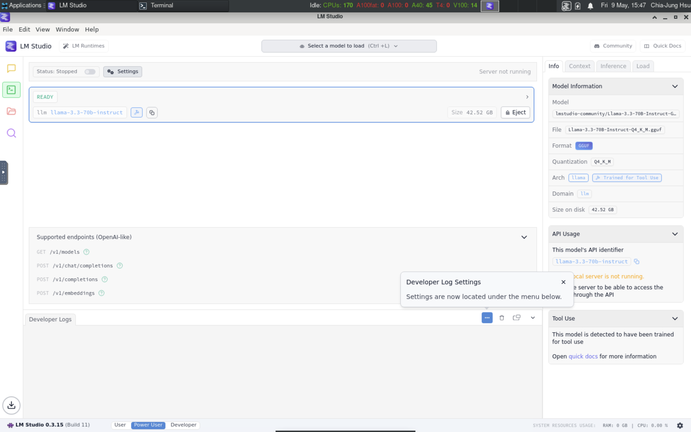

Quick Start to Access LLMs¶
LM Studio¶
LM Studio is a desktop app for developing and experimenting with LLMs. It has a friendly user interface and suitable for private usage. In this tutorial, we will use it to show some key concepts in LLM inference.
We have deployed it on Alvis, you can find it in Menu > C3SE > LM Studio.
Important
LM Studio supports limited file format and may not scale well on clusters. Don't use it for productive work.


Basic inference¶
Once you start LM studio, it brings you to a chat window. On top of the chat window, you can see a drop-down list allowing you to select/download models.
 

Before downloading any models, it is important to select a directory to save downloaded models. Click the folder icon in the sidebar, you can find that it saves models into your home directory by default. You can change the path to any directory where you have downloaded models. If you haven't downloaded any model, you had better set the path to a directory under your storage project. Otherwise, you run out of file/space quota easily.


Once you set the path, you can go back to the chat window to download/load models and start a chat.

OpenAI-Compatible API Server¶
Besides of the chat window, LM Studio also supports OpenAI compatible API server to handle HTTP requests. The server can be launched from the GUI by toggling the option in Developer tab in the sidebar. Once you start the server, you can send HTTP requests to the listed endpoints.

In the figure, it shows there are four endpoints:
/v1/models/v1/chat/completions/v1/completions/v1/embeddings
You can test the API by sending HTTP request from your terminal by curl. For example:
# Request for available models
$ curl http://localhost:1234/v1/models
{
"data": [
{
"id": "llama-3.3-70b-instruct",
"object": "model",
"owned_by": "organization_owner"
},
{
"id": "text-embedding-nomic-embed-text-v1.5",
"object": "model",
"owned_by": "organization_owner"
}
],
"object": "list"
}
# Chat
$ curl http://localhost:1234/v1/chat/completions -H "Content-Type: application/json" -d '{
"model": "llama-3.3-70b-instruct",
"messages": [
{ "role": "user", "content": "why is the sky blue" }
]
}'
{
"id": "chatcmpl-stubx36wa8neg1u8jo5re",
"object": "chat.completion",
"created": 1746801158,
"model": "llama-3.3-70b-instruct",
"choices": [
{
"index": 0,
"logprobs": null,
"finish_reason": "stop",
"message": {
"role": "assistant",
"content": "The sky appears blue because of a phenomenon called Rayleigh scattering, which is the scattering of light by small particles or molecules in the atmosphere.\n\nHere's what happens:\n\n1. **Sunlight enters Earth's atmosphere**: When sunlight enters our atmosphere, it contains all the colors of the visible spectrum (red, orange, yellow, green, blue, indigo, and violet).\n2. **Light encounters tiny molecules**: The light encounters tiny molecules of gases such as nitrogen (N2) and oxygen (O2) in the atmosphere.\n3. **Shorter wavelengths scatter more**: These small molecules scatter the shorter wavelengths of light, like blue and violet, more than the longer wavelengths, like red and orange. This is because the smaller molecules are more effective at scattering the higher-energy, shorter-wavelength light.\n4. **Blue light is scattered in all directions**: As a result of this scattering, the blue light is dispersed in all directions, reaching our eyes from all parts of the sky.\n5. **Our eyes perceive the sky as blue**: Since we see more blue light being scattered in all directions, our brains interpret the color of the sky as blue.\n\nThere are some additional factors that can affect the color of the sky:\n\n* **Dust and pollution**: Tiny particles in the atmosphere, like dust, smoke, or pollutants, can scatter light in different ways, making the sky appear more hazy or gray.\n* **Water vapor**: Water molecules in the air can also scatter light, which is why the sky often appears more blue on dry days.\n* **Time of day and sun position**: The color of the sky can change depending on the time of day and the position of the sun. During sunrise and sunset, the sky can take on hues of red, orange, and pink due to the scattering of light by atmospheric particles.\n\nIn summary, the sky appears blue because of the way that tiny molecules in the atmosphere scatter sunlight, favoring shorter wavelengths like blue and violet over longer wavelengths like red and orange."
}
}
],
"usage": {
"prompt_tokens": 40,
"completion_tokens": 406,
"total_tokens": 446
},
"stats": {},
"system_fingerprint": "llama-3.3-70b-instruct"
}
More information can be found in the official document
Command line tools¶
Once you have ever stared LM studio, it automatically installs a command line
tool into you home directory: ~/.lmstudio/bin/lms. With the tool, you can do
the same operations as what you can do in the GUI. You can also see the models
you have loaded from the GUI in the terminal
$ ~/.lmstudio/bin/lms --help
lms <subcommand>
where <subcommand> can be one of:
- status - Prints the status of LM Studio
- server - Commands for managing the local server
- ls - List all downloaded models
- ps - List all loaded models
- get - Searching and downloading a model from online.
- load - Load a model
- unload - Unload a model
- create - Create a new project with scaffolding
- log - Log operations. Currently only supports streaming logs from LM Studio via `lms log stream`
- import - Import a model file into LM Studio
- flags - Set or get experiment flags
- bootstrap - Bootstrap the CLI
- version - Prints the version of the CLI
For more help, try running `lms <subcommand> --help`
$ ~/.lmstudio/bin/lms status
┌ Status ───────────────────────────────────┐
│ │
│ Server: ON (Port: 1234) │
│ │
│ Loaded Models │
│ · llama-3.3-70b-instruct - 42.52 GB │
│ │
└───────────────────────────────────────────┘
$ ~/.lmstudio/bin/lms ps
LOADED MODELS
Identifier: llama-3.3-70b-instruct
• Type: LLM
• Path: lmstudio-community/Llama-3.3-70B-Instruct-GGUF/Llama-3.3-70B-Instruct-Q4_K_M.gguf
• Size: 42.52 GB
• Architecture: Llama
Advanced settings¶
In LM Studio GUI, you can find advanced setting in the Developer tab. You can
set the temperature, top K, top P values, etc in the inference setting.
There are also parameters about performance, like GPU offload, CPU Thread, KV
cache, etc.


vLLM¶
vLLM is a fast and easy-to-use library for LLM inference and serving.
vLLM itself doesn't have a GUI interface, but it is efficient for LLM inference and allow users to load LLMs to multiple GPU and multiple nodes. It can scale well on clusters like Alvis.
There are two main entrypoints in vLLM, OpenAI-Compatible API Server and LLM
class. The former one is implemented by the AsyncLLMEngine class while the
latter one is based on LLMEngine class.
OpenAI-Compatible API Server¶
A typical way to use it is using the command line to serve models in OpenAI-compatible API servers. For example:
will servegpt-oss-20b model on http://localhost:8000.
More arguments can be found
here or in
vllm serve --help.
Once the vLLM server get launched successfully. The following APIs are available:
/v1/models, Methods: GET
/v1/responses, Methods: POST
/v1/responses/{response_id}, Methods: GET
/v1/responses/{response_id}/cancel, Methods: POST
/v1/chat/completions, Methods: POST
/v1/completions, Methods: POST
/v1/embeddings, Methods: POST
/v1/score, Methods: POST
/v1/audio/transcriptions, Methods: POST
/v1/audio/translations, Methods: POST
/v1/rerank, Methods: POST
/v2/rerank, Methods: POST
You also get some APIs from vLLM itself such as:
/openapi.json, Methods: HEAD, GET
/docs, Methods: HEAD, GET
/health, Methods: GET
/tokenize, Methods: POST
/detokenize, Methods: POST
...
Offline inference (LLM class)¶
As a python package, vLLM also provide LLM python class, which can be
imported into python scripts and load models to do inference. For example:
The LLM class can accept many
arguments and
most of them are shared with the available arguments for vllm serve. However,
some features are limited in AsyncLLMEngine, such as pipeline parallelism,
and not supported in LLM class.
Once a LLM instance is created, users can call the methods such as chat and
generate as calling APIs in OpenAI-Compatible API server. Here is an example:
from vllm import LLM, SamplingParams
sampling_params = SamplingParams(
temperature=0.6,
max_tokens=128,
top_p=0.9,
)
messages = [
{"role": "user", "content": "Why is the sky blue?"},
]
llm = LLM(
model="openai/gpt-oss-20b",
tensor_parallel_size=4,
quantization="mxfp4"
)
output = llm.chat(messages, sampling_params, use_tqdm=False)
print(output[0].outputs[0].text)
More examples can be found in vLLM document.
Other Tools¶
- Transformer
- ollama + open webui